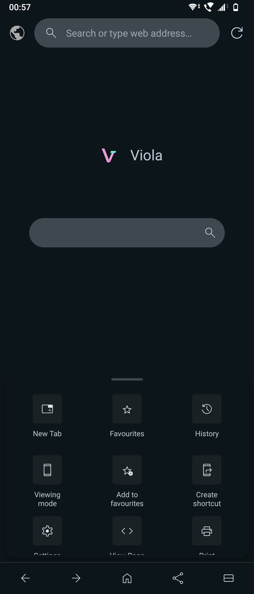
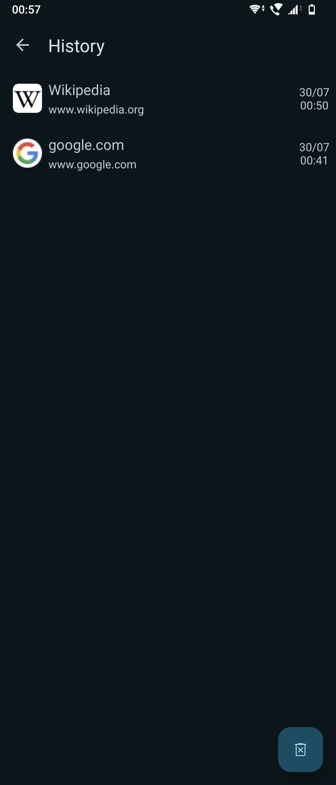
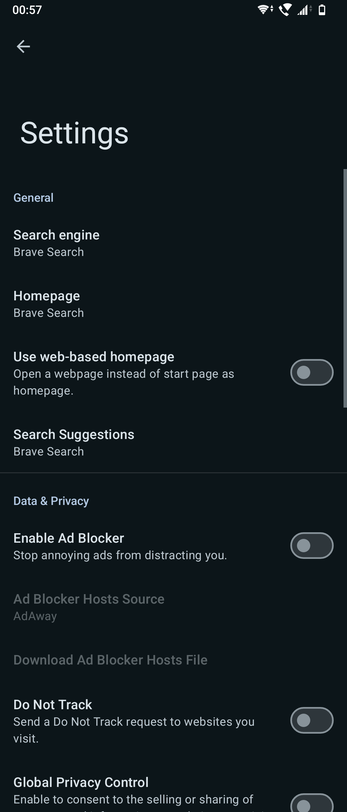
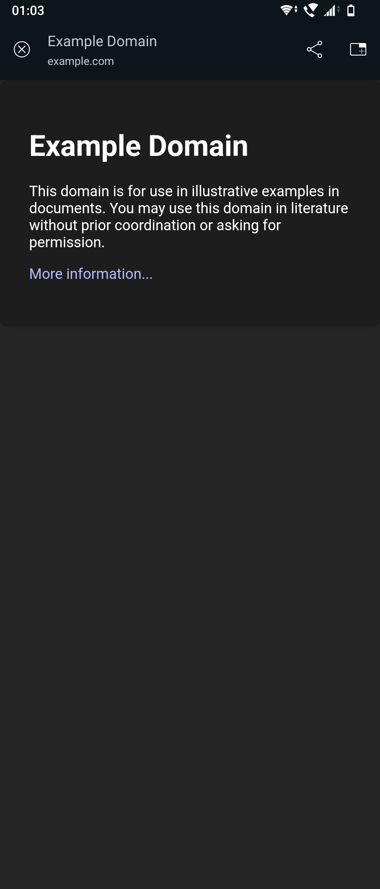
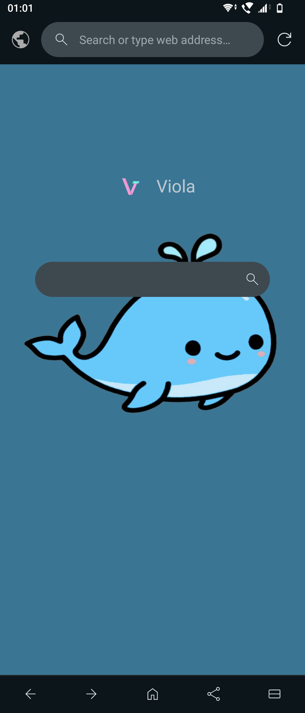

<!-- html stuffs -->
<title>Viola Browser</title>
<link rel="icon" href="assets/logo.png">

<!-- scripts -->
<script src="https://rawcdn.githack.com/oscarmorrison/md-page/232e97938de9f4d79f4110f6cfd637e186b63317/md-page.js"></script><noscript>

<!-- styles -->
<link rel="stylesheet" href="styles.css">

<!-- content -->
<object data="fragments/banner.html" width="450" height="95"></object>

<div style="display: flex; word-wrap: break-word;">
<a href="download.html" class="minButton minButton-green">Download</a>
<a href="https://gitlab.com/TipzTeam/viola" class="minButton minButton-blue">Source Code</a>
</div>

---

## About
Viola Browser is a [WebView](https://en.wikipedia.org/wiki/WebView)-based Android web browser. The goal is to create a browser that embodies the beauty and functionality of most mainstream browsers, while making it as lightweight as possible.

Viola Browser currently requires at least **API Level 19**, and is **2.1 MiB** in size.

## Features
### Current features
- Material You design + Monet colours + Force Dark
- Simplistic start page + Wallpapers
- Reach Mode (moving address bar to the bottom)
- Custom Tabs
- Hosts-based ad blocker
- [Do Not Track](https://en.wikipedia.org/wiki/Do_Not_Track) & [Global Privacy Control](https://globalprivacycontrol.org/)
- Desktop mode & Custom user agents
- Working logins for apps
- Search suggestions
- Shortcuts & Web-Apps
- Viewing page source
- Favourites & History
- Recents-based multi-tab
- Pull-to-refresh + Smart disable on Maps
- Printing

### Upcoming features
- Built-in multi-threaded download manager (7.x)
- Custom Javascript loader (7.x)
- Built-in multi-tabs manager (8.x)
- Theming (8.x)

## Screenshots
<div class="gallery gallery-cols-5">
    <figure>
        
        <figcaption>Startpage</figcaption>
    </figure>
    <figure>
        
        <figcaption>History</figcaption>
    </figure>
    <figure>
        
        <figcaption>Settings</figcaption>
    </figure>
    <figure>
        
        <figcaption>Custom Tabs</figcaption>
    </figure>
    <figure>
        
        <figcaption>Startpage with wallpaper</figcaption>
    </figure>
</div>
